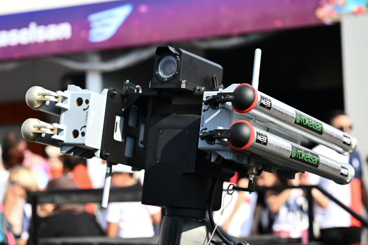
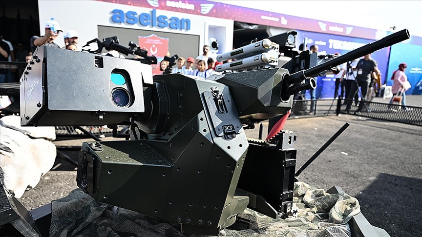
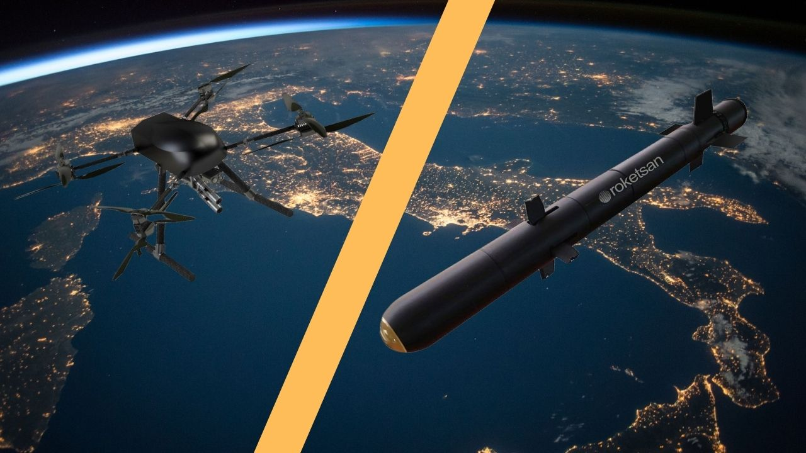

Lazer Güdümlü Mini Füze Sistemi
METE, düşük ağırlık ve yüksek hassasiyet gerektiren görevler için geliştirilen lazer güdümlü mini füze sistemidir. Özellikle hibrit harekât ortamlarında, hassas ve kontrollü vurucu etki oluşturmak üzere tasarlanmıştır.
Küçük boyutu sayesinde mini insansız hava araçları, insanlı veya insansız kara platformları ve çeşitli silah kuleleri üzerine entegre edilebilir. Bu yönüyle METE, klasik daha büyük tanksavar veya hava-yer mühimmatlarına göre çok daha hafif ve esnek bir çözüm sunar.
Yarı aktif lazer güdüm yapısı, hedefin işaretlenmesiyle birlikte yüksek doğrulukta angajman sağlar. Bu da sistemi personel, açık alan hedefleri, hafif araçlar ve hassas vurulması gereken yakın-orta mesafeli hedefler için uygun hale getirir.
40 mm
~ 50 cm
~ 1.4 kg
1.250+ m
Yarı Aktif Lazer
1 m CEP
| Sistem Tipi | Lazer güdümlü mini füze sistemi |
| Adı | METE |
| Üretici | ROKETSAN |
| Görev Alanı | Yakın mesafede hassas, düşük yan hasarlı vurucu etki gerektiren görevler |
| Çap | 40 mm |
| Uzunluk | ~ 50 cm |
| Ağırlık | ~ 1.4 kg |
| Azami Menzil | 1.250+ m |
| Güdüm Yöntemi | Yarı aktif lazer güdüm |
| Hassasiyet | 1 m CEP |
| Platformlar | Mini insansız hava araçları, kara platformları (insanlı/insansız), silah kuleleri (insanlı/insansız) |
| Kullanım Konsepti | Düşük ağırlıklı, hassas, kompakt mühimmat |
| Öne Çıkan Özellik | Çok küçük boyutta, yüksek hassasiyetli ve çok platformlu mini füze çözümü |
| Hassas Vuruş | 1 metre CEP sınıfında yüksek doğruluk |
| Düşük Ağırlık | Mini İHA ve hafif platformlara entegrasyonu kolaylaştıran kompakt yapı |
| Düşük Yan Hasar | Büyük mühimmatlara göre daha kontrollü etki oluşturma potansiyeli |
| Çoklu Platform Uyumu | Hem hava hem kara hem de kule sistemlerinde kullanım |
| Lazer İşaretleme ile Angajman | İşaretli hedefe hassas yönelim |
| Hibrit Harekât Kullanımı | Şehir, sınır ve özel operasyon benzeri hassas görevlerde uygun kullanım yapısı |
| Kompakt Vurucu Güç | Çok küçük mühimmat hacminde yönlendirilebilir etki |
| Personel Hedefleri | Açık alandaki hassas personel hedefleri |
| Hafif Araçlar | Hafif korumalı veya korumasız araçlar |
| Açık Mevzi Hedefleri | Düşük yan hasarla etkisiz hale getirilmek istenen hedefler |
| Yakın Mesafe Taktik Hedefler | Mini platformlardan vurulması gereken hassas hedefler |
| Mini İHA’lar | Düşük ağırlıklı insansız hava araçlarında kullanım |
| Kara Platformları | İnsanlı veya insansız kara araçlarına entegrasyon |
| Silah Kuleleri | İnsanlı veya insansız kule sistemlerinde kullanım |
| Kullanım Konsepti | Büyük tanksavar mühimmatlarına göre daha hafif, daha kompakt ve daha hassas görev odağı |
| Aile İçindeki Yeri | ROKETSAN hassas güdümlü sistemler içinde en küçük sınıf mini füze çözümü |
| Taktik Avantaj | Mini ve hafif platformlara akıllı mühimmat kabiliyeti kazandırması |


